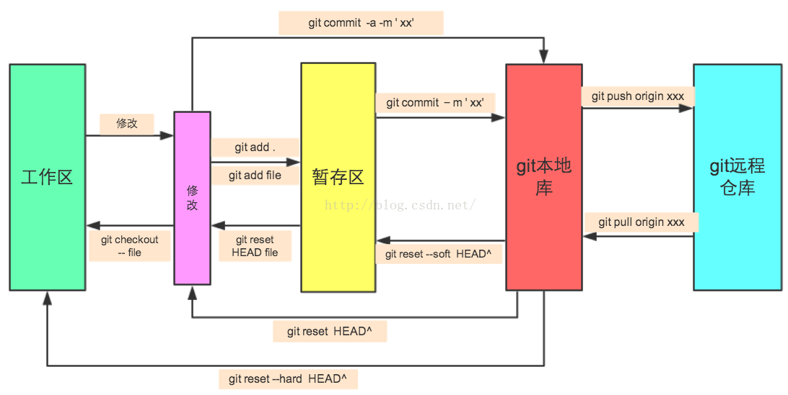

gentoo使用FAQ
Table of Contents
- 1. gentoo
- 1.1. 同帐户下不同终端通信
- 1.2. 挂载ISO，squashfs文件
- 1.3. 制作一个启动U盘
- 1.4. 如何升级完整地升级 @gentoo
- 1.5. 调节屏幕亮度
- 1.6. 添加irssi频道
- 1.7. 安装oh-my-zsh
- 1.8. Gentoo:回归到portage稳定分支
- 1.9. 快速发送邮件
- 1.10. rsync备份文件
- 1.11. 调节cpu频率
- 1.12. urxvt,emacs中文字体变方框的问题
- 1.13. gentoo,没有声音
- 1.14. vim 不同窗口之间的复制粘贴
- 1.15. 抓图
- 1.16. 搜索文档内容
- 1.17. git常用命令
- 1.18. chrome不能输入中文
- 1.19. 当机时安全重新开机
1 gentoo
1.1 同帐户下不同终端通信
echo "hello,world" >/dev/pts/3
1.2 挂载ISO，squashfs文件
sudo mount –o loop linuxsetup.iso /mnt/iso sudo mount -o loop image.squashfs /mnt/squashfs mksquashfs ~/test test.squashfs
1.3 制作一个启动U盘
sudo dd bs=4M if=/home/spark/download/archlinux-2017.04.01-x86_64.iso of=/dev/sdb status=progress && sync
一定要用 /dev/sdb 而不是 /dev/sdb1 ，否则会不能启动的。
1.4 如何升级完整地升级 @gentoo
Gentoo 升级系统的标准步骤
emerge --sync //升级整个portage目录 emerge python //如果不是最新的python，需要按提示执行此操作 /usr/sbin/update-python //执行完emerge python后执行此操作 emerge -avukDN world //按照 /var/lib/portage/world 文件下的包，重新构建整个系统 emerge -avukDN --with-bdeps=y @world emerge -av --depclean //清除不需要（孤立）的软件包 revdep-rebuild //gentoolkit包里面的一个软件，用来检查系统的依赖关系是否都满足， etc-update && env-update dispatch-conf //更新系统的配置文件 emerge -e world //本地重新编译整个系统，USE标记变化不大时不需执行 eclean -d distfiles //清理下载的旧的源码包
1.5 调节屏幕亮度
sudo vim /sys/class/backlight/acpi_video0/brightness
1.6 添加irssi频道
/server add -auto -network freenode chat.freenode.net #自动加入服务器 /channel add -auto #archlinux-cn freenode #自动加入频道 /connect Freenode #连接服务器 /network add -nick YOURNICKNAME Freenode #注册用户名 /msg NickServ identify YOUR_PASSWORD #验证密码 /wc #离开频道 /quit #退出irssi /ignore * joins parts quits nicks #屏蔽进入/退出等提示 /save
1.7 安装oh-my-zsh
sh -c "$(wget https://raw.github.com/robbyrussell/oh-my-zsh/master/tools/install.sh -O - )"
wget https://github.com/robbyrussell/oh-my-zsh/raw/master/tools/install.sh -O - | sh
二者选一即可
1.8 Gentoo:回归到portage稳定分支
个人觉得~挺好，没这个必要，但是实在想的话：
改make.conf(amd64,x86之类):
sed "s/\(ACCEPT_KEYWORDS=\"\)~/\1/g" /etc/make.conf > /etc/make.conf
备份package.keywords:
cp /etc/portage/package.keywords /etc/portage/package.keywords.back
合法化现存unstable分支的包包：
equery -i -N list | grep \~ | sed 's/.* \(.*\) (.*/> /etc/portage/package.keywords
因为新版本的原因，equery已经不支持i这个参数了
equery -N list -F '=$cpv $mask2' '*' | grep \~ > testpackages
这样一来，系统将会在一次次的emerge -uDN world 中慢慢趋于稳定分支…
1.9 快速发送邮件
echo "测试test" | mutt -s "test" goodaniu@163.com
直接发送，不会打开vim和邮件发送客户端
mutt goodaniu@163.com -s 'test send mail'
会打开vim编辑器和邮件客户端，需要手工输入一些控制命令
1.10 rsync备份文件
sudo rsync -az --delete /etc/ /home/spark/document/backup/etc.bak/
1.11 调节cpu频率
cpupower frequency-set -g governor
这里的governor,可以用ondemand，performance,conservative,powersave,userspace
建议用conservative和powersave
sudo cpupower frequency-set -g conservative sudo cpupower frequency-info sudo cpupower frequency-set -u 1.5GHz
1.12 urxvt,emacs中文字体变方框的问题
应该是xft的梗，因为emacs的中文显示也不正常
也许可以试试：emerge urxvtconfig urxvt-perls urxvt-font-size
1.13 gentoo,没有声音
有可能是默认静音，
amixer sset Master unmute
1.14 vim 不同窗口之间的复制粘贴
首先选中要复制的文本，然后 "+y ，然后到要粘贴的地方 "+p
注意这个“＋”不能省略
上面是利用剪切板的，如果用缓冲区的话要用 "*y和 "*p（或者shift+insert)
1.15 抓图
- 抓取桌面：scrot desktop.png，该命令将当前的整个桌面抓取下来，并保存为 desktop.png 文件。可以在当前的目录中找到此图像文件。
scrot desktop.png
- 抓取窗口：scrot -bs window.png，选项 b 使 scrot 在抓取窗口时一同将外边框抓取下来，而 s 选项则让用户选择所要抓取的是何窗口。
scrot -bs window.png
- 抓取区域：scrot -s rectangle.png，在执行此命令后，使用鼠标拖曳的矩形区域将被 scrot 抓取下来。
scrot -s rectangle.png
scrot -se 'mv $f ~/picture/ 2>/dev/null'
1.16 搜索文档内容
e.g. 在document目录中搜索含有内容"hello"的文件
sudo emerge the_silver_searcher
cd document
ag hello
1.17 git常用命令
- workspace: 本地的工作目录。（记作A）
- index：缓存区域，临时保存本地改动。（记作B）
- local repository: 本地仓库，只想最后一次提交HEAD。（记作C）
- remote repository：远程仓库。（记作D）
1. 初始化 git init //创建 git clone /path/to/repository //检出 git config --global user.email "you@example.com" //配置email git config --global user.name "Name" //配置用户名 2. 操作 git add <file> // 文件添加，A → B git add . // 所有文件添加，A → B git commit -m "代码提交信息" //文件提交，B → C git commit --amend //与上次commit合并, *B → C git push origin master //推送至master分支, C → D git pull //更新本地仓库至最新改动， D → A git fetch //抓取远程仓库更新， D → C git log //查看提交记录 git status //查看修改状态 git diff//查看详细修改内容 git show//显示某次提交的内容 3. 撤销操作 git reset <file>//某个文件索引会回滚到最后一次提交， C → B git reset//索引会回滚到最后一次提交， C → B git reset --hard // 索引会回滚到最后一次提交， C → B → A git checkout // 从index复制到workspace， B → A git checkout -- files // 文件从index复制到workspace， B → A git checkout HEAD -- files // 文件从local repository复制到workspace， C → A 4. 分支相关 git checkout -b branch_name //创建名叫“branch_name”的分支，并切换过去 git checkout master //切换回主分支 git branch -d branch_name // 删除名叫“branch_name”的分支 git push origin branch_name //推送分支到远端仓库 git merge branch_name // 合并分支branch_name到当前分支(如master) git rebase //衍合，线性化的自动， D → A 5. 冲突处理 git diff //对比workspace与index git diff HEAD //对于workspace与最后一次commit git diff <source_branch> <target_branch> //对比差异 git add <filename> //修改完冲突，需要add以标记合并成功 6. 其他 gitk //开灯图形化git git config color.ui true //彩色的 git 输出 git config format.pretty oneline //显示历史记录时，每个提交的信息只显示一行 git add -i //交互式添加文件到暂存区

1.18 chrome不能输入中文
ibus-daemon -drx
1.19 当机时安全重新开机
https://blog.gtwang.org/linux/safe-reboot-of-linux-using-magic-sysrq-key/
在一般 Linux 當機的狀況下，若要重新啟動系統，可以按住 Alt + SysRq 兩個鍵，然後依序按下以下幾個指令鍵:
Alt+SysRq r e i s u b
依照這樣的順序可以盡可能促使所有的程式正常關閉、資料同步寫入磁碟之後，再重新啟動 Linux系統，而在依照順序按下這些指令鍵時，每按完一個按鍵請等待幾秒鐘後，再繼續按下一個，讓電腦有時間處理每個動作。
指令鍵/說明
- r 將鍵盤解除 raw 模式（unraw）。
- e 送出 SIGTERM 訊號至系統上所有的行程，讓所有正在執行中的程式正常關閉。
- i 送出 SIGKILL 訊號至系統上所有的行程，強制所有正在執行中的程式立即關閉。
- s 同步（sync）所有掛載磁碟的寫入，讓資料實際寫入實體磁碟。
- u 以唯讀（read-only）方式重新掛載所有磁碟。
- b 立即重新啟動系統（此動作並不會將資料同步寫入至硬碟，也不會讓硬碟卸載）。
- n 重設所有高優先順序（real-time）行程的 nice 設定值。
- f 呼叫 oomkill 中止使用大量記憶體的行程。
- o 將電腦直接關機。
- k 中止目前 virtual console 下的所有程式（Secure Access Key，SAK）。
dkfj